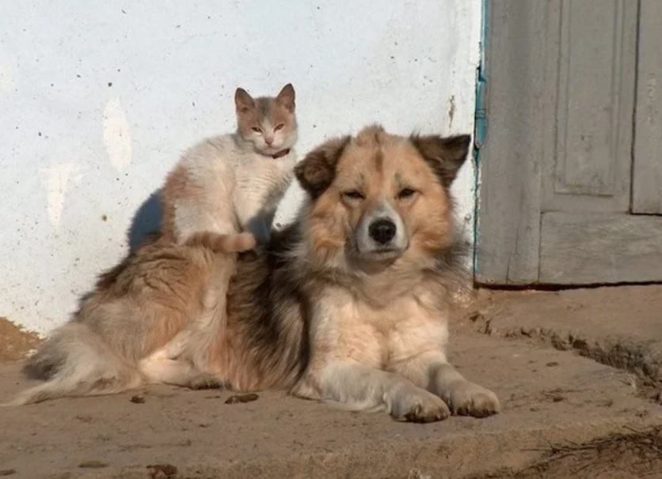

Они делили одну будку на двоих: Шарик лежал снаружи, положив голову на лапы, а Ася устраивалась у него на боку, как на пуховой перине. Вместе они охотились на крыс, вместе грелись под одной крышей заброшенного гаража, вместе встречали рассветы. Жильцы нового дома пожаловались, что во дворе «безнадзорные животные». Приехали ловцы с сачками и железными клетками. Шарик первым услышал шаги. Он встал перед будкой, загородив Асю. И зарычал — впервые в жизни так страшно, что ловец на миг отступил. Но его ударили током по лапам, и он упал, жалобно взвизгнув.